Инвестиционный аналитик — это специалист, который оценивает инвестиционную привлекательность компаний, анализирует финансовые отчеты и помогает формировать эффективные инвестиционные стратегии. Профессия инвестиционный аналитик востребована среди работодателей, так как именно такие эксперты проводят инвестиционную оценку активов, анализируют финансовые показатели и оценивают риски инвестиционных проектов. Инвестиционные аналитики работают с инвестиционными фондами, портфелями и различными финансовыми инструментами, чтобы выстраивать оптимальные стратегии компании и повышать эффективность инвестиций. Мы составили рейтинг программ и курсов, где обучение по инвестиционной аналитике помогает освоить профессию, получить практические навыки финансового анализа и научиться оценивать эффективность инвестиционных решений.
Информация обновлена:
ТОП онлайн-курсов обучения на Инвестиционного Аналитика
- 🏆 Инвестиционный аналитик – Академия Eduson (по промокоду kursy скидка 🎁 5%)
- 🏆 Mini-MBA: Инвестиционный аналитик — SF Education (по промокоду onlinekursy скидка 🎁 15%)
- 🏆 Инвестиционный аналитик — SF Education (по промокоду onlinekursy скидка 🎁 15%)
- Школа инвестиций — SF Education (по промокоду onlinekursy скидка 🎁 15%)
- MBA по управлению в сфере инвестиций — Московская Бизнес Академия (по промокоду onlinekursy скидка 🎁 10%)
- Mini MBA «Управление в сфере инвестиций» — Московская Бизнес Академия (по промокоду onlinekursy скидка 🎁 10%)
- Управляющий инвестиционными проектами — Московская Бизнес Академия (по промокоду onlinekursy скидка 🎁 10%)
- Управление инвестиционными проектами — Московская Бизнес Академия (по промокоду onlinekursy скидка 🎁 10%)
- Инвестиционный аналитик — Русская Школа Управления
- Управление инвестиционным проектом — Русская Школа Управления
- Финансовый аналитик — Яндекс Практикум
- Профессия Инвестиционный аналитик — Skillbox
- Оценка бизнеса — Skillbox
- Инвестиционный анализ: эффективное управление инвестициями — Moscow Business School
- Инвестиционный аналитик — Факультет экономики НИУ ВШЭ
Бесплатные курсы по аналитике инвестиций
- Инвестиционный анализ: путь к экспертному уровню, бесплатно – SF Education
Отличительные преимущества каждой дистанционной программы обучения на Инвестиционного аналитика
| № | Курс и школа | Отличительные преимущества | |
|---|---|---|---|
| 🥇 | 🏆 Инвестиционный аналитик — Академия Eduson | Официальный диплом о профпереподготовке, 320 уроков и 24 кейса, гибкий формат и пожизненный доступ к материалам, поддержка кураторов, помощь в трудоустройстве и реальный рост зарплаты. | Перейти |
| 🥈 | 🏆 Mini-MBA: Инвестиционный аналитик — SF Education | Международный диплом HISTES + сертификаты FMI, 670+ часов, 66 реальных кейсов, карьерный центр и стажировки у партнёров, работа с Power BI и VBA. | Перейти |
| 🥉 | 🏆 Инвестиционный аналитик — SF Education | 7 месяцев и 370+ часов практики, диплом международного образца, 52 бизнес-кейса, партнёрская программа CFACLUB, доступ к материалам навсегда. | Перейти |
| 4 | Школа инвестиций — SF Education | 16 модулей, 50 бизнес-кейсов, 230+ часов практики, игровая система SF Coin, диплом HISTES+FMI, стажировки у партнёров. | Перейти |
| 5 | MBA по управлению в сфере инвестиций — Московская Бизнес Академия | Полноценная программа MBA (18 мес.), диплом с регистрацией в ФРДО, 70% практики, стратегическое управление + инвестиционный анализ, карьерная поддержка. | Перейти |
| 6 | Mini MBA «Управление в сфере инвестиций» — Московская Бизнес Академия | 9 месяцев, диплом MBA в ФРДО, модуль по ИИ в аналитике, 70% практики, стратегическое планирование и оценка бизнеса. | Перейти |
| 7 | Управляющий инвестиционными проектами — Московская Бизнес Академия | 6 месяцев, диплом о переподготовке, акцент на кейсах и практических проектах, обновленная программа 2025, 65% выпускников трудоустраиваются за 3 мес. | Перейти |
| 8 | Управление инвестиционными проектами — Московская Бизнес Академия | Краткосрочный курс (1 мес.), удостоверение в ФРДО, 70% практики, возврат средств 14 дней, налоговый вычет 13%. | Перейти |
| 9 | Инвестиционный аналитик — Русская Школа Управления | Интенсивный формат (4 дня, 32 акад. часа), очно/онлайн, удостоверение гос. образца в ФРДО, разработан по приказу Минобрнауки №499м. | Перейти |
| 10 | Управление инвестиционным проектом — Русская Школа Управления | 32 акад. часа, гибкий формат (очно/онлайн/видеокурс), удостоверение гос. образца, акцент на практические методики управления проектами (HADY, S.P.A.C.E.). | Перейти |
| 11 | Финансовый аналитик — Яндекс Практикум | 8 месяцев онлайн, диплом профпереподготовки, поддержка кураторов и карьерных консультантов, фокус на реальных кейсах. | Перейти |
| 12 | Профессия Инвестиционный аналитик — Skillbox | 8 месяцев, сертификат лицензированного образца, стажировка через 3 мес., официальное трудоустройство через 6 мес., доступ к материалам навсегда. | Перейти |
| 13 | Оценка бизнеса — Skillbox | 8 месяцев, более 200 уроков, диплом с лицензией, акцент на оценке бизнеса и M&A, востребованность — более 1 200 вакансий. | Перейти |
| 14 | Инвестиционный анализ: эффективное управление инвестициями — Moscow Business School | Интенсив 2 дня (очно/онлайн), удостоверение о повышении квалификации, участие в бизнес-клубе MBS, 85% выпускников повышают позицию. | Перейти |
| 15 | Инвестиционный аналитик — Факультет экономики НИУ ВШЭ | 5 месяцев, диплом гос. образца в ФРДО, онлайн синхронные лекции + Smart LMS, преподаватели ВШЭ, скидка для выпускников. | Перейти |
1. 🏆 Инвестиционный аналитик – Академия Eduson
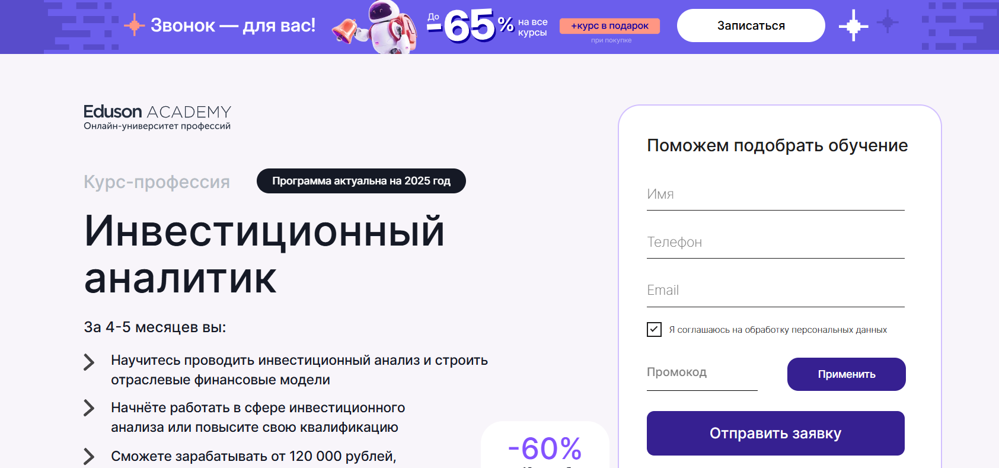- ✅ Официальный сайт: eduson.academy
- 💸 Цена: 85 200 ₽ в месяц (скидка до –60%).
- 💳 Рассрочка: доступна, 7 100 ₽ в месяц на 12 месяцев без переплат, онлайн-оплата со скидкой –5%.
- 📚 Формат: дистанционное обучение, 320 уроков, 24 бизнес-кейса, тренажёры, домашние задания, дипломный проект.
- ⏳ Продолжительность: 4–5 месяцев.
- 📜 Документ: диплом о профессиональной переподготовке.
- 📝 Трудоустройство: резюме отправляется в компании-партнёры, помощь в составлении резюме и подготовке к собеседованиям.
- 🔷 Для кого подходит курс: для бухгалтеров, экономистов, финансистов, владельцев бизнеса и специалистов смежных сфер.
Особенности:
Обучение построено на практике — студенты анализируют финансовые отчёты, оценивают инвестиционные проекты и строят отраслевые модели. Формат гибкий, занятия можно совмещать с работой благодаря дистанционной системе. Поддержка куратора действует весь период обучения, что позволяет быстро решать вопросы и корректировать проекты. Программа обновлена в 2024 году и учитывает требования рынка на 2025 год. После окончания курса слушатели получают официальный диплом и навсегда доступ к материалам. Выпускники программы зарабатывают от 120 000 ₽ и востребованы в инвестиционных фондах, консалтинговых компаниях и корпорациях. Академия помогает выпускникам найти работу, а также предоставляет инструменты для фриланса и удалённого формата работы.
Чему учатся студенты:
- Разрабатывать инвестиционные стратегии для разных типов бизнеса
- Анализировать отчётность компаний и оценивать их финансовое состояние
- Оценивать инвестиционную привлекательность проектов
- Использовать Excel и Google Таблицы на продвинутом уровне
- Строить отраслевые финансовые модели и прогнозировать денежные потоки
- Сопровождать и контролировать инвестиционные проекты
Преподаватели:
- Оксана Дажун — основатель «Dajun Consulting», официальный спикер Сколково и Сбербанка
- Азиза Улугова — преподаватель НИУ ВШЭ, зам. финансового директора медиа-холдинга
- Павел Вешаев — основатель FinHelp, более 16 лет опыта в финансах
- Кирилл Шишаев — бизнес-тренер по корпоративным финансам, преподаватель НИУ ВШЭ
- Ярослав Малиновский — эксперт по инвестиционному анализу в «Ростехе», опыт в KPMG
- Антон Антонов — финансовый директор Maximum Education
- Евгений Кромский — эксперт с квалификациями CFA, ACCA, CIMA
- Екатерина Плясунова — финансовый консультант, экс-менеджер X5 и Unilever
- Александр Зеленцов — член ACCA, обладатель CFA, опыт работы в Московской Бирже
- Сергей Елин — основатель группы «АИП», более 20 лет в консалтинге
Преимущества:
- Практическая отработка навыков на кейсах и тренажёрах
- Курс учитывает актуальные требования работодателей
- Доступ к материалам и обновлениям навсегда
- Гибкий график обучения из любой точки мира
- Поддержка куратора на протяжении всего обучения
- Официальный диплом государственного образца
Отзывы учеников:
Студенты отмечают удобный формат обучения, большое количество практических заданий и высокую квалификацию преподавателей. Особенно ценится помощь кураторов и возможность применения знаний сразу в работе. Среди плюсов часто называют актуальность программы, поддержку в трудоустройстве и гибкий график занятий.
Перейти на официальный сайт курса2. 🏆 Mini-MBA: Инвестиционный аналитик — SF Education
- ✅ Официальный сайт: sf.education
- 💸 Цена: от 175 000 ₽ со скидкой до 65%.
- 💳 Рассрочка: от 9 722 ₽/мес, беспроцентная на 18 месяцев, первый взнос через месяц.
- 📚 Формат: онлайн-уроки, практические задания, кейсы, тесты, вебинары, индивидуальные консультации с экспертами.
- ⏳ Продолжительность: 11 месяцев.
- 📜 Документ: международный диплом совместно с HISTES, сертификаты FMI.
- 📝 Трудоустройство: карьерный центр SF Education помогает составить резюме, подготовиться к собеседованию и выйти на вакансии инвестиционных аналитиков.
- 🔷 Для кого подходит курс: для начинающих и действующих специалистов в финансах, экономистов, бухгалтеров, а также всех, кто хочет освоить инвестиционный анализ и повысить квалификацию.
Особенности:
Программа объединяет теорию и практику через 17 модулей, более 670 часов занятий и 66 реальных кейсов. Учебный процесс строится на анализе финансовых отчетов и построении прогнозов развития компаний. Студенты получают доступ к индивидуальным консультациям с экспертами и навсегда сохраняют материалы курса. В рамках занятий используются современные инструменты — Excel, Power BI, VBA, Google Sheets и QUIK. Участники программы могут проверить свои силы в сквозных проектах, приближенных к реальным бизнес-ситуациям. По окончании обучения доступна поддержка карьерного центра и возможность попасть на стажировки в партнерские инвестиционные компании.
Чему учатся студенты:
- Анализировать инвестиционные проекты и оценивать их эффективность
- Строить финансовые модели и прогнозировать развитие компаний
- Проводить оценку активов и стоимости бизнеса
- Управлять инвестиционными портфелями и корпоративными финансами
- Анализировать финансовую отчетность и управленческие показатели
- Разрабатывать инвестиционные стратегии и оценивать риски проектов
Преподаватели:
- Михаил Афонин — Основатель и CEO VosCap
- Влас Лёзин — ex-Vice President Goldman Sachs
- Антон Якушин — ex-Senior Associate EY
- Ринат Гилядов — Director, Valuation and Transaction Advisory Services
Преимущества:
- Поддержка карьерного центра и доступ к вакансиям партнеров
- Международный диплом и сертификаты, признаваемые работодателями
- Индивидуальный план обучения и сопровождение куратора
- Более 148 практических заданий и кейсов для портфолио
- Возможность 48 часов бесплатного доступа к материалам
- Совмещение обучения с работой благодаря гибкому формату
Отзывы учеников:
Выпускники подчеркивают практическую направленность программы и большое количество реальных кейсов. Отмечают высокий уровень преподавателей, доступное объяснение сложных тем и быструю обратную связь от кураторов. Многие студенты отмечают карьерную поддержку, которая помогает выйти на вакансии инвестиционных аналитиков с конкурентным резюме.
Перейти на официальный сайт курса3. 🏆 Инвестиционный аналитик — SF Education
- ✅ Официальный сайт: sf.education
- 💸 Цена обучения: от 91 700 ₽ со скидкой.
- 💳 Рассрочка: от 5 094 ₽/мес в рассрочку до 18 месяцев, беспроцентная.
- 📚 Формат: онлайн-уроки, практические задания, кейсы, вебинары, консультации, сквозной проект.
- ⏳ Продолжительность: 7 месяцев, 370+ часов практики.
- 📜 Документ: диплом международного образца (ЕС), лицензия РФ № Л035−01 271−78/00177 402.
- 📝 Трудоустройство: помощь карьерного центра, база вакансий, рекомендации работодателям.
- 🔷 Для кого подходит курс: начинающим аналитикам, бухгалтерам, экономистам, финансистам и тем, кто планирует освоить новую профессию.
Особенности:
Программа построена на практике: студенты решают 52 бизнес-кейса, проводят анализ компаний и инвестиционных проектов. Обучение включает работу с финансовым моделированием, корпоративными финансами и оценкой стоимости бизнеса. Формат рассчитан на тех, кто хочет совмещать обучение с работой. Доступ к материалам и обновлениям остаётся навсегда, а поддержка кураторов помогает пройти все этапы без задержек. Курс разработан совместно с CFACLUB и Tpeople, подтвержден ведущими институтами FMI и HISTES. Участники получают навыки работы с Excel, Power BI, Google Sheets и другими современными инструментами для анализа данных. По окончании обучения выпускники получают диплом и могут претендовать на должности с зарплатами от 90 000 ₽ до 150 000 ₽ и выше.
Чему учатся студенты:
- Проводить финансовый анализ компаний и инвестиционных проектов
- Оценивать эффективность инвестиций и управлять рисками
- Разрабатывать инвестиционные стратегии и отчёты
- Моделировать денежные потоки и строить финансовые модели
- Использовать Excel, Power BI и другие инструменты аналитика
Преподаватели:
- Михаил Афонин — Основатель и CEO VosCap
- Влас Лёзин — ex-Vice President, Goldman Sachs
- Антон Якушин — ex-Senior Associate, EY
- Ринат Гилядов — Director, Valuation and Transaction Advisory Services
Преимущества:
- Доступ к курсу и обновлениям остаётся навсегда
- Партнёрская программа с реальными компаниями и фондами
- Поддержка карьерного центра и помощь в составлении резюме
- Возможность пройти демо-доступ в течение 48 часов бесплатно
- Международный диплом, ценимый работодателями в Европе и РФ
- Индивидуальное сопровождение кураторов и экспертов
Отзывы учеников:
Студенты отмечают практический формат, реальную пользу от кейсов и обратную связь от экспертов. Среди плюсов — удобный график обучения, доступ к материалам после окончания курса и помощь в трудоустройстве. Многие выпускники подчеркивают, что полученные навыки помогли повысить доход и устроиться в инвестиционные фонды и банки.
Перейти на официальный сайт курса4. Школа инвестиций — SF Education
- ✅ Официальный сайт: sf.education
- 💸 Цена обучения: от 57 750 ₽, скидка до 65%.
- 💳 Рассрочка: беспроцентная от 3 208 ₽/мес на 18 месяцев, первый взнос через месяц.
- 📚 Формат: онлайн-занятия, видеоуроки, практические задания, тесты, кейсы, вебинары, кураторская поддержка.
- ⏳ Продолжительность: 5 месяцев, 230+ часов практики.
- 📜 Документ: международный диплом совместно с HISTES и сертификат FMI.
- 📝 Трудоустройство: карьерный центр помогает с резюме и собеседованиями, есть стажировки у партнеров.
- 🔷 Для кого подходит курс: начинающим инвесторам, трейдерам, специалистам в сфере финансов и корпоративным клиентам.
Особенности:
Программа сочетает 16 модулей, 33 практических задания и 50 бизнес-кейсов. Студенты изучают инвестиционные стратегии, анализируют финансовые рынки и оценивают риски. Большой акцент сделан на практику: тесты, кейсы, работа с реальными данными и инструментами. Обучение проходит онлайн в удобном формате с личным куратором и обратной связью. Доступ к материалам и обновлениям сохраняется навсегда. Используются игровые механики — за активность начисляются SF Coin, которые можно обменять на бонусы. По окончании курса выдается диплом международного образца, признанный работодателями. Более 15 000 студентов уже прошли обучение, и 72% из них вышли на новую позицию в течение полугода.
Чему учатся студенты:
- Научиться оценивать финансовое состояние компаний и инвестиционную привлекательность.
- Анализировать финансовые отчетности и строить инвестиционные портфели.
- Формировать стратегии с учетом рисков и целей.
- Оценивать активы, рассчитывать эффективность инвестиций.
- Использовать методы анализа рынков и прогнозирования цен.
- Работать с акциями, облигациями, ETF, криптовалютами и другими инструментами.
- Понимать налоговые режимы и способы легальной оптимизации.
- Применять аналитические сервисы и современные инструменты управления капиталом.
Преподаватели:
- Влас Лёзин — ex-Vice President, Goldman Sachs.
- Александр Вальцев — основатель и генеральный директор SF Education.
- Ольга Коношевская — инвестиционный советник, независимый финансовый консультант.
- Максим Шеин — управляющий активами и главный инвестиционный стратег, БКС.
Преимущества:
- 80% практики и 20% теории для быстрого закрепления знаний.
- Международный диплом, аккредитация FMI и HISTES.
- Поддержка карьерного центра: резюме, собеседования, стажировки.
- Индивидуальный учебный план и личный куратор.
- Доступ к курсу и обновлениям навсегда.
- Игровая система с SF Coin для повышения вовлеченности.
- Преподаватели — практикующие инвестиционные аналитики и эксперты рынка.
Отзывы учеников:
Студенты отмечают практическую направленность и доступность объяснений. Часто выделяют удобный график обучения, поддержку кураторов и возможность совмещать курс с работой. Многие подчеркивают, что обучение помогает научиться анализировать рынки, оценивать риски и повысить квалификацию для карьерного роста.
Перейти на официальный сайт курса5. MBA по управлению в сфере инвестиций — Московская Бизнес Академия
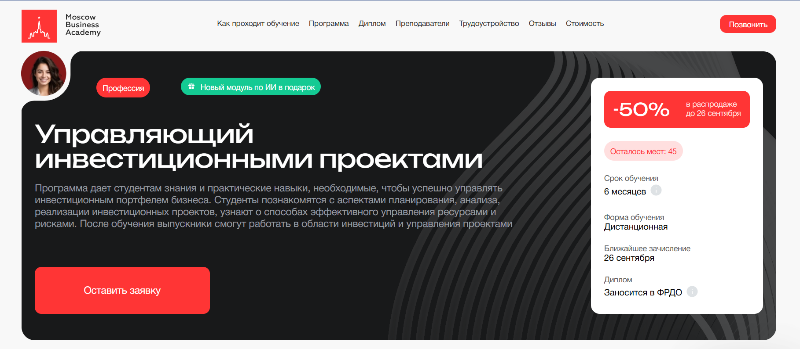- ✅ Официальный сайт: moscow.mba
- 💸 Цена обучения: 285 000 ₽ (со скидкой 50%).
- 💳 Рассрочка: от 7 916 ₽/мес до 36 месяцев без переплаты.
- 📚 Формат: дистанционное обучение, видеолекции, практические задания, онлайн-ресурсы, проекты, поддержка кураторов.
- ⏳ Продолжительность: 18 месяцев.
- 📜 Документ: международный диплом MBA установленного образца, заносится в ФРДО.
- 📝 Трудоустройство: помощь в подготовке резюме, прохождении собеседований, доступ к вакансиям партнеров.
- 🔷 Для кого подходит курс: финансовым аналитикам, инвестиционным аналитикам, менеджерам фондов, руководителям финансовых отделов, консультантам.
Особенности:
Программа сочетает стратегическое управление и инвестиционный анализ, позволяя студентам работать с реальными кейсами и формировать профессиональные навыки. Обучение построено по гибкому графику, что дает возможность совмещать его с карьерой. Курсы включают лекции экспертов рынка, анализ финансовых инструментов и моделирование проектов. Студенты научатся оценивать эффективность инвестиций, проводить инвестиционную оценку и анализировать риски. Курс предусматривает изучение корпоративных финансов, портфельного управления и методов оценки бизнеса. Благодаря дистанционному формату обучения доступ к материалам возможен в любое время. В конце студенты выполняют итоговый проект и получают диплом, который высоко ценят работодатели.
Чему учатся студенты:
- Проводить финансовый анализ и анализировать инвестиционные рынки
- Оценивать активы и стоимость бизнеса
- Разрабатывать инвестиционные стратегии и управлять портфелями
- Анализировать финансовые модели и рассчитывать инвестиционные показатели
- Управлять рисками инвестиционных проектов
- Проводить инвестиционную оценку и оценивать эффективность решений
Преподаватели:
- Оксана Малервейн — эксперт-практик финансово-экономической сферы, финансовый директор с опытом более 20 лет
- Динар Биктимиров — предприниматель, бизнес-тренер, основатель GROW&Co, эксперт в коучинге и управлении
- Алексей Могилёв — преподаватель экономики и менеджмента, журналист, специалист по работе с клиентами
Преимущества:
- Дистанционный курс с доступом к образовательной платформе 24/7
- 70% программы составляют практические кейсы и проекты
- Преподаватели — действующие специалисты с опытом работы в бизнесе
- Диплом имеет международное признание и заносится в ФРДО
- Гибкий график обучения с возможностью совмещать с работой
- Карьерная поддержка и помощь в трудоустройстве
Отзывы учеников:
Студенты отмечают доступность дистанционного формата, высокое качество материалов и практическую направленность занятий. Чаще всего выделяют помощь преподавателей и поддержку кураторов, возможность совмещать обучение с работой и быстрый рост профессиональных навыков. Многие подчеркивают, что обучение помогает продвинуться по карьерной лестнице и получить востребованную профессию.
Перейти на официальный сайт курса6. Mini MBA «Управление в сфере инвестиций» — Московская Бизнес Академия
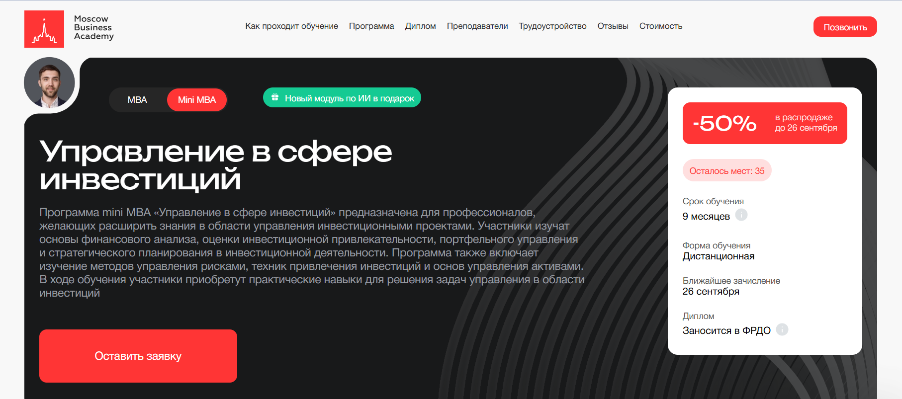- ✅ Официальный сайт: moscow.mba
- 💸 Цена: 206 450 ₽ (со скидкой).
- 💳 Рассрочка: доступна 8 602 ₽ в месяц до 24 месяцев без переплаты, первый платеж через месяц.
- 📚 Формат: дистанционное обучение, видеолекции, практические задания, итоговые проекты, бонусные модули.
- ⏳ Продолжительность: 9 месяцев.
- 📜 Документ: международный диплом установленного образца, заносится в ФРДО.
- 📝 Трудоустройство: помощь в составлении резюме, портфолио, подготовка к собеседованиям, консультации по поиску клиентов.
- 🔷 Для кого подходит курс: для инвестиционных аналитиков, финансовых аналитиков, специалистов по управлению портфелями и менеджеров по инвестициям.
Особенности:
Образовательная программа создана для тех, кто работает с инвестиционными проектами и хочет укрепить профессиональные навыки. Обучение проходит в дистанционном формате, что позволяет совмещать учебу с работой. Студенты изучают стратегическое планирование, управление активами, финансовое моделирование и методы анализа рисков. На курсе большое внимание уделяется практическим заданиям, основанным на реальных кейсах. Программа регулярно обновляется, чтобы соответствовать современным требованиям работодателей. Участники получают доступ к материалам онлайн в любое время. Диплом после окончания обучения подтверждает квалификацию и открывает новые карьерные перспективы. Дополнительный бонус — модуль по применению искусственного интеллекта в финансовой аналитике.
Чему учатся студенты:
- Анализировать инвестиционные проекты и оценивать риски
- Разрабатывать инвестиционные стратегии и управлять портфелями
- Проводить финансовый анализ и работать с отчетностью компаний
- Применять методы оценки стоимости бизнеса и активов
- Осваивать финансовое моделирование и прогнозирование
- Работать с инновационными инвестициями и источниками финансирования
Преподаватели:
- Анастасия Тодовянская — кандидат экономических наук, аналитик инвестиционных проектов, эксперт в финансовом менеджменте и оценке рисков.
- Виктор Калмыков — кандидат наук, инвестиционный управляющий более 10 лет, член совета Санкт-Петербургской биржи.
- София Кузина — международный коуч PCC ICF, эксперт по личной стратегии, спикер на площадках Сколково и SkillBox.
Преимущества:
- Современная дистанционная платформа с доступом к материалам 24/7
- 70% программы построено на практических кейсах
- Поддержка кураторов и обратная связь от экспертов
- Международная аккредитация и диплом, заносимый в ФРДО
- Карьерные консультации и помощь в трудоустройстве
- Возможность совмещать обучение с профессиональной деятельностью
Отзывы учеников:
Студенты отмечают доступность материалов и практическую направленность занятий. Чаще всего подчеркивают профессионализм преподавателей и возможность применять полученные знания сразу в работе. Многие выпускники отмечают рост карьерных перспектив и повышение квалификации после прохождения программы.
Перейти на официальный сайт курса7. Управляющий инвестиционными проектами — Московская Бизнес Академия
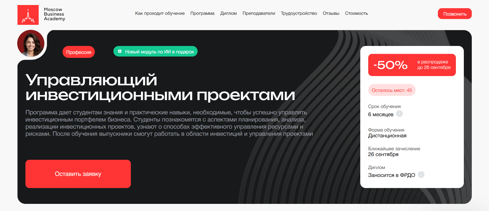- ✅ Официальный сайт: moscow.mba
- 💸 Цена обучения: 227 400 ₽ (со скидкой 50%).
- 💳 Рассрочка: доступна 9 475 ₽/мес на 24 месяца без переплаты, первый платеж через месяц.
- 📚 Формат: дистанционное обучение: видеолекции, практические задания, итоговые проекты, обратная связь от преподавателей и кураторов.
- ⏳ Продолжительность: 6 месяцев.
- 📜 Документ: диплом о профессиональной переподготовке (заносится в ФРДО) и сертификат установленного образца.
- 📝 Трудоустройство: помощь в составлении резюме, подготовке к собеседованиям, рекомендации по поиску вакансий.
- 🔷 Для кого подходит курс: финансовым менеджерам, аналитикам, управляющим фондами и специалистам, планирующим карьеру в сфере инвестиций.
Особенности:
Программа построена с акцентом на практические навыки и реальные кейсы, что позволяет студентам сразу применять знания в работе. Обучение проходит полностью онлайн, что удобно для совмещения с работой и личными делами. Студенты изучают современные методы анализа финансовых рынков, управление рисками и стратегиями. В рамках курса предоставляются бонусные модули по искусственному интеллекту и цифровым активам. После окончания обучения выпускники могут претендовать на должности в инвестиционных компаниях, банках и корпоративных структурах. Диплом академии имеет государственную аккредитацию, а сама программа обновлена в 2025 году. Кураторы и преподаватели сопровождают студентов на каждом этапе. 65% выпускников находят работу в течение трех месяцев после окончания курса.
Чему учатся студенты:
- Оценивать инвестиционную привлекательность проектов
- Проводить финансовое моделирование и анализировать инвестиционные стратегии
- Использовать инструменты SWOT, PEST, Agile, Waterfall, ESG
- Оценивать риски проектов и эффективность инвестиций
- Научиться анализировать финансовые отчеты компаний и рынки
- Формировать инвестиционные портфели и управлять активами
Преподаватели:
- Ицхак Пинтосевич — эксперт по личностному росту, бизнес-тренер, автор 15 книг
- Ангелина Шам — корпоративный бизнес-психолог, кандидат наук, автор книг по коммуникации
- Павел Лях — президент АКБ «КАУРИ», министр спорта и туризма Пермского края, преподаватель МАГУ и ПГНИУ
Преимущества:
- Возможность совмещать обучение с работой благодаря дистанционному формату
- 70% программы составляют практические задания и кейсы
- Обновленная программа соответствует запросам работодателей
- Государственная лицензия и международные аккредитации
- Доступ к материалам из любой точки мира
- Помощь в карьерном росте и трудоустройстве
Отзывы учеников:
Студенты отмечают высокий профессионализм преподавателей и структурированность программы. Многие подчеркивают ценность практических заданий и проектов, которые помогают научиться оценивать инвестиционную привлекательность, анализировать рынки и применять полученные знания на практике. Выпускники также отмечают поддержку кураторов и реальную помощь в трудоустройстве.
Перейти на официальный сайт курса8. Управление инвестиционными проектами — Московская Бизнес Академия
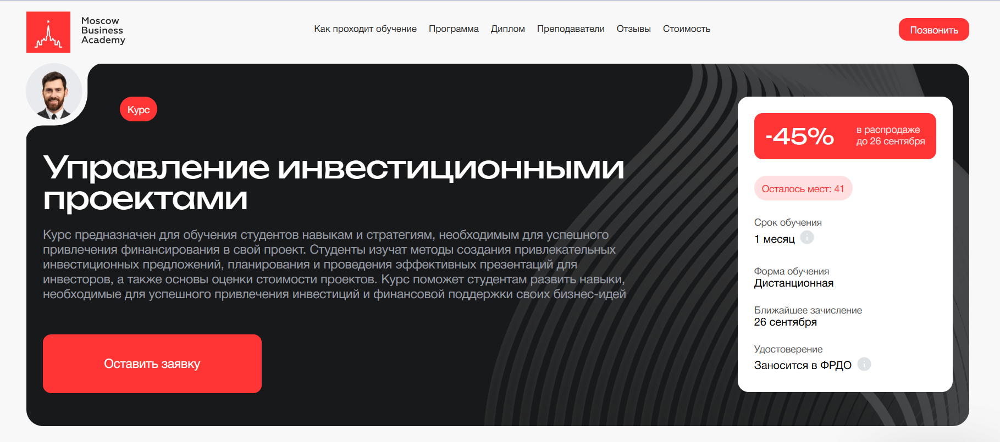- ✅ Официальный сайт: moscow.mba
- 💸 Цена: 40 632 ₽ (со скидкой 45%).
- 💳 Рассрочка: 3 386 ₽ / мес на 12 месяцев без переплаты.
- 📚 Формат: дистанционное обучение, видеоматериалы, практические задания, обратная связь от преподавателей и кураторов.
- ⏳ Продолжительность: 1 месяц.
- 📜 Документ: удостоверение о повышении квалификации и сертификат установленного образца, заносится в ФРДО.
- 📝 Трудоустройство: 65% выпускников находят работу в течение 3 месяцев после окончания курса.
- 🔷 Для кого подходит курс: руководителям проектов, финансовым аналитикам, менеджерам и специалистам, ответственным за привлечение инвестиций.
Особенности:
Программа сочетает теорию и практику, позволяя слушателям освоить методы анализа инвестиционных проектов и стратегию их успешной реализации. Студенты получают доступ к современным инструментам управления финансами и инвестициями, учатся строить финансовые модели и оценивать риски проектов. Курс построен в дистанционном формате, что дает возможность совмещать обучение с работой. Преподаватели — эксперты с опытом работы в крупных компаниях, делятся практическими кейсами и реальными примерами из бизнеса. Ежегодное обновление программы обеспечивает актуальность знаний, востребованных работодателями.
Чему учатся студенты:
- Разрабатывать бизнес-планы и инвестиционные стратегии
- Анализировать финансовые модели и оценивать активы
- Подготавливать инвестиционные предложения для инвесторов
- Оценивать эффективность инвестиций и риски проектов
- Применять методы финансового моделирования и анализа денежных потоков
Преподаватели:
- Анастасия Тодовянская — кандидат экономических наук, старший преподаватель госуправления, аналитик инвестиционных проектов, финансовый менеджер. Опыт в разработке технико-экономических показателей, анализе NPV, IRR, PP, PI, управленческом учете и бюджетировании.
Преимущества:
- Обучение по государственной лицензии и международным аккредитациям
- Практико-ориентированный подход: 70% программы — работа с кейсами
- Возможность совмещать учебу с работой благодаря дистанционному формату
- Поддержка кураторов и преподавателей на всех этапах обучения
- Возврат полной стоимости в течение 14 дней, если передумали
- Налоговый вычет 13% после оплаты курса
Отзывы учеников:
Студенты отмечают высокий профессионализм преподавателей, доступность материалов и удобный график обучения. Многие подчеркивают практическую ценность программы: знания и навыки помогают сразу применять полученные инструменты в работе. В отзывах также выделяют поддержку кураторов и полезность практических кейсов.
Перейти на официальный сайт курса9. Инвестиционный аналитик — Русская Школа Управления
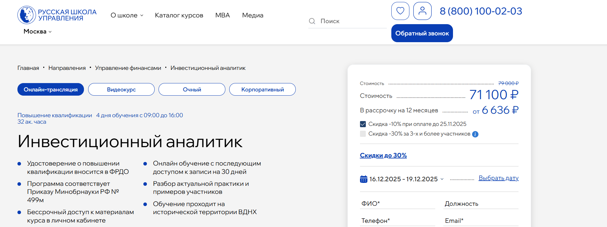- ✅ Официальный сайт: uprav.ru
- 💸 Цена обучения: от 71 100 ₽ (в зависимости от формата).
- 💳 Рассрочка: от 6 636 ₽/мес до 12 месяцев.
- 📚 Формат: онлайн-трансляция, видеокурс, очные занятия, тесты, практические кейсы, домашние задания.
- ⏳ Продолжительность: 32 академических часа (4 дня, с 09:00 до 16:00).
- 📜 Документ: удостоверение о повышении квалификации, данные вносятся в ФРДО.
- 📝 Трудоустройство: знания помогают продвигаться по карьерной лестнице и повышать эффективность работы.
- 🔷 Для кого подходит курс: для руководителей, специалистов, компаний, заинтересованных в повышении эффективности инвестиционных проектов.
Особенности:
Программа курса сочетает практику и теорию в соотношении 70/30. Обучение проходит на территории ВДНХ или в дистанционном формате, что удобно для слушателей из разных регионов. Студенты получают бессрочный доступ к материалам, а также записи занятий на 30 дней. На курсе анализируют инвестиционные проекты, разбирают реальные примеры и кейсы. Программа разработана в соответствии с Приказом Минобрнауки РФ №499м, что гарантирует качество и актуальность. В процессе обучения слушатели учатся работать с финансовыми моделями, инвестиционными стратегиями и оценкой рисков проектов. По окончании выдается документ государственного образца, защищенный от подделки.
Чему учатся студенты:
- Проводить комплексный анализ эффективности бизнеса
- Разрабатывать и интерпретировать финансовую отчетность
- Оценивать достоверность данных для анализа
- Применять методы анализа денежных потоков
- Использовать методы вертикального и горизонтального анализа
- Осваивать метод C-V-P анализа для прогнозирования прибыли
- Изучать недостатки отчетности по РСБУ и способы их выявления
Преподаватели:
- Лукинский Дмитрий Георгиевич — эксперт в области корпоративных финансов, аудиторской деятельности и инвестиционного анализа.
- Стерхова Светлана Александровна — к.э.н., доцент кафедры управления инновационными проектами РАНХиГС, сертифицированный тренер-консультант с опытом руководящей работы.
Преимущества:
- Возможность совмещать обучение с работой
- Гибкие форматы: очно, онлайн или видеокурс
- Реальные кейсы и практические задания
- Регулярное обновление материалов в личном кабинете
- Высокая оценка студентов — рейтинг 4.9
- Помощь в развитии карьеры и повышении квалификации
- Обратная связь от преподавателей и возможность консультаций
Отзывы учеников:
Слушатели отмечают, что программа насыщена реальными примерами и полезными расчетами. Многие подчеркивают удобство онлайн-формата, а также доступность материалов. Высоко оценивают профессионализм преподавателей, особенно Дмитрия Лукинского. Чаще всего студенты выделяют практическую направленность, актуальность знаний и возможность применить их в работе сразу после окончания курса.
Перейти на официальный сайт курса10. Управление инвестиционным проектом — Русская Школа Управления
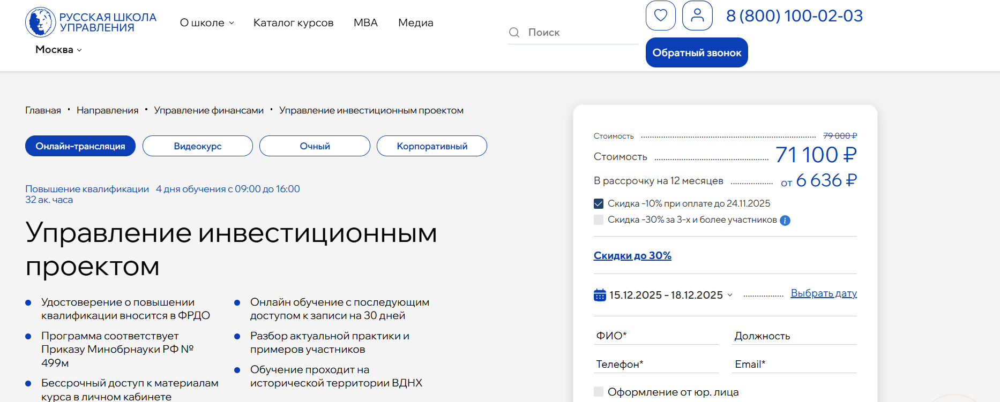- ✅ Официальный сайт: uprav.ru
- 💸 Цена: от 71 100 ₽.
- 💳 Рассрочка: от 6 636 ₽/мес до 12 месяцев.
- 📚 Формат: очные занятия, онлайн-трансляции, видеокурс, тесты, кейсы, домашние задания, бессрочный доступ к материалам.
- ⏳ Продолжительность: 32 академических часа, 4 дня обучения.
- 📜 Документ: удостоверение о повышении квалификации с внесением в ФРДО.
- 📝 Трудоустройство: повышение конкурентоспособности, помощь в карьерном росте и привлечении инвесторов.
- 🔷 Для кого подходит курс: для руководителей, специалистов и компаний, работающих с инвестиционными проектами.
Особенности:
Программа создана для тех, кто хочет освоить практические навыки работы с инвестиционными проектами и научиться оценивать инвестиционную привлекательность бизнеса. Участники осваивают финансовое моделирование, изучают методы анализа рисков и принимают участие в решении практических кейсов. Обучение проходит в гибком формате: можно выбрать очный вариант на ВДНХ, онлайн или дистанционный курс. Все форматы включают доступ к материалам и записям лекций. Финансовые аналитики отмечают удобство обучения и возможность совмещать его с работой. Завершение программы подтверждается документом государственного образца. Благодаря полученным знаниям студенты смогут разрабатывать стратегии развития и оценивать эффективность инвестиций. Такой подход помогает повысить ценность проектов для инвесторов и укрепить профессиональные навыки слушателей.
Чему учатся студенты:
- Разрабатывать инвестиционные тизеры и бизнес-планы
- Проводить конкурентный анализ и анализ ключевых факторов успеха
- Управлять рисками проекта различными методами
- Строить финансовые модели и прогнозировать денежные потоки
- Использовать методики HADY циклов и S.P.A.C.E.
- Анализировать внутренние и внешние риски компаний
Преподаватели:
- Лукинский Дмитрий Георгиевич — эксперт в корпоративных финансах, аудите и инвестиционном анализе.
- Ильдеменов Андрей Сергеевич — к.э.н., доцент, консультант по управлению и финансовому планированию, автор учебных пособий.
- Стерхова Светлана Александровна — к.э.н., доцент РАНХиГС, сертифицированный тренер по управлению инновационными проектами.
Преимущества:
- 70% практики и работа с реальными кейсами
- Доступ к материалам курса без ограничений по времени
- Программа соответствует приказу Минобрнауки РФ №499м
- Возможность выбора удобного формата обучения
- Преподаватели — действующие специалисты и эксперты рынка
- Большая часть выпускников отмечает карьерный рост после окончания
Отзывы учеников:
Слушатели отмечают высокий уровень преподавания и доступность материала. Многие подчеркивают ценность практических занятий, удобство личного кабинета и возможность применять знания сразу на практике. Отзывы студентов указывают на улучшение навыков управления проектами и рост эффективности инвестиций.
Перейти на официальный сайт курса11. Финансовый аналитик — Яндекс Практикум
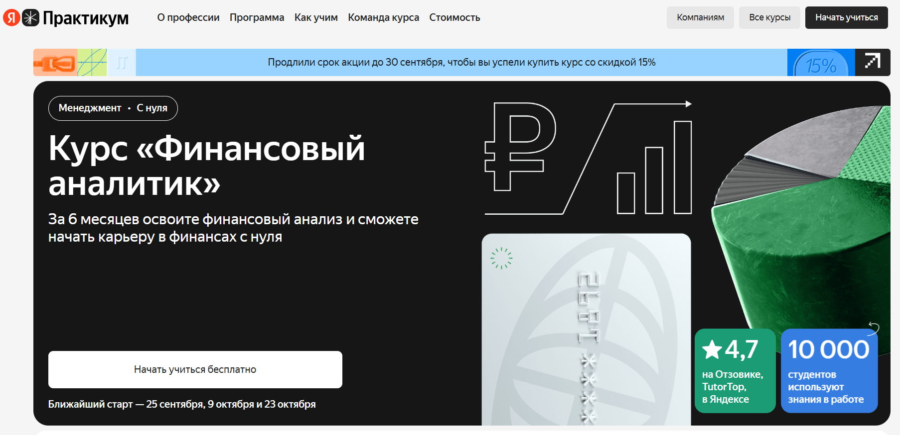- ✅ Официальный сайт: practicum.yandex.ru
- 💸 Цена обучения: от 79 000 ₽ (со скидкой).
- 💳 Рассрочка: доступна от 3 225 ₽/мес до 24 месяцев без переплат.
- 📚 Формат: онлайн-обучение, видеолекции, практические задания, тесты, работа с реальными кейсами.
- ⏳ Продолжительность: 8 месяцев.
- 📜 Документ: диплом о профессиональной переподготовке.
- 📝 Трудоустройство: помощь с резюме, карьерные консультации, доступ к вакансиям партнёров.
- 🔷 Для кого подходит курс: для студентов экономических направлений, начинающих аналитиков и специалистов смежных сфер, которые хотят освоить инвестиционный анализ.
Особенности:
Программа ориентирована на тех, кто хочет работать инвестиционным аналитиком и освоить ключевые инструменты для оценки проектов и бизнеса. Студенты получают практические навыки анализа рисков и эффективности инвестиций, учатся формировать инвестиционные портфели и работать с финансовыми моделями. Курс построен так, чтобы обучение проходило по удобному графику и сочетало теорию с практикой. В процессе занятий слушатели разбирают реальные кейсы, учатся анализировать финансовые рынки и принимать инвестиционные решения. Выпускники смогут оценивать активы, использовать методы анализа и разрабатывать стратегии. Обучение в дистанционном формате позволяет совмещать курс с работой.
Чему учатся студенты:
- Анализировать инвестиционные проекты и оценивать их эффективность
- Проводить финансовый анализ компаний и рынков
- Формировать и управлять инвестиционными портфелями
- Использовать методы оценки стоимости бизнеса и активов
- Работать с финансовыми моделями и прогнозами
Преподаватели:
- Антон Бородин — инвестиционный аналитик с опытом работы в международных компаниях, эксперт по корпоративным финансам
- Елена Смирнова — финансовый менеджер, кандидат экономических наук, автор публикаций по инвестиционным стратегиям
- Игорь Кузнецов — практикующий эксперт в области управления активами, консультант крупных фондов
Преимущества:
- Обучение проходит полностью онлайн с гибким графиком
- Фокус на практических навыках и реальных кейсах
- Поддержка кураторов и карьерных консультантов
- Возможность совмещать обучение с работой
- Помощь в трудоустройстве после окончания курса
- Программа соответствует требованиям работодателей в сфере финансов
Отзывы учеников:
Студенты отмечают удобный формат обучения и возможность сразу применять знания на практике. Многие подчеркивают пользу работы с реальными кейсами и поддержку наставников. Также часто выделяют карьерные консультации, которые помогают в поиске работы и составлении профессионального резюме.
Перейти на официальный сайт курса12. Профессия Инвестиционный аналитик — Skillbox
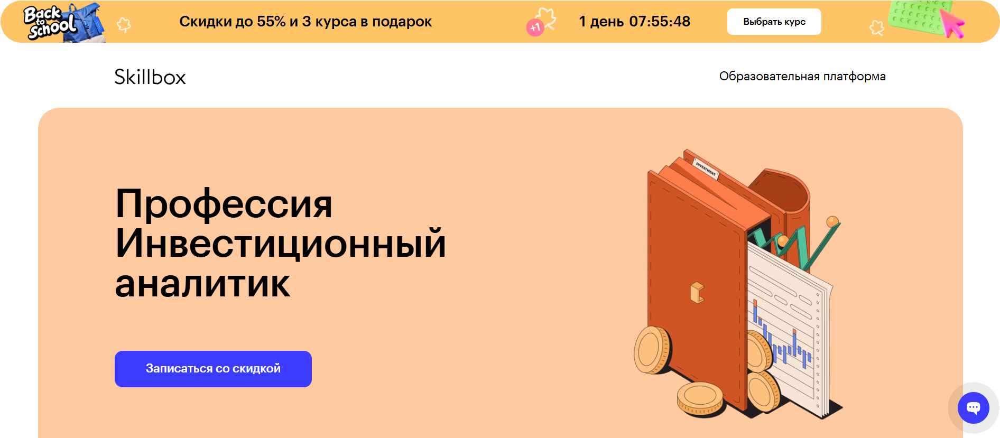- ✅ Официальный сайт: skillbox.ru
- 💸 Цена: от 114 315 ₽ (скидка до 55%).
- 💳 Рассрочка: от 4 763 ₽/мес до 24 месяцев.
- 📚 Формат: онлайн курсы, видеолекции, практические задания, тесты, проекты и работа с кураторами.
- ⏳ Продолжительность: 8 месяцев.
- 📜 Документ: сертификат установленного образца, лицензия №Л035−1 298−77/179 609.
- 📝 Трудоустройство: помощь в поиске работы, стажировка через 3 месяца, возможность официального трудоустройства через 6 месяцев.
- 🔷 Для кого подходит курс: выпускникам финансовых факультетов, аналитикам, финансистам, математикам и специалистам технических направлений.
Особенности:
Программа обучения сочетает теорию и практику, что помогает студентам быстро освоить инвестиционный анализ. Участники работают с реальными кейсами и портфелями, учатся оценивать бизнес и анализировать финансовые рынки. Обучение проходит в дистанционном формате, что позволяет совмещать его с работой. Курс даёт возможность получить практические навыки и подготовиться к работе в компаниях, банках или на фрилансе. Преподаватели — эксперты с многолетним опытом и международными сертификатами. Студенты получают доступ к комьюнити и поддержку кураторов. По окончании обучения выпускники имеют все необходимые знания для трудоустройства в сфере корпоративных финансов и инвестиций.
Чему учатся студенты:
- Проводить инвестиционные оценки компаний и проектов
- Научиться анализировать инвестиционные портфели и оценивать риски
- Строить и интерпретировать финансовые модели
- Оценивать инвестиционную привлекательность и эффективность инвестиций
- Проводить финансовый анализ публичных компаний
- Создавать презентации с финансовыми показателями для инвесторов
Преподаватели:
- Дмитрий Бородин — инвестиционный директор, кандидат экономических наук, CFA, FRM
- Игорь Внуков — сертифицированный оценщик бизнеса RICS
- Алексей Смывин — руководитель направления ПФИ, банк «Открытие»
- Екатерина Прозорова — аналитик департамента корпоративных финансов и M&A
- Артур Халатов — финансовый партнёр Ozon
- Вера Мелехова — руководитель направления в ПАО «МегаФон»
- Надежда Лебедева — управляющий директор банка, FCCA
- Антон Шульга — руководитель отдела оценки и финансового моделирования Deloitte
Преимущества:
- Скидки до 55% и бонусные курсы в подарок
- Практические кейсы для портфолио и реальный опыт
- Помощь в трудоустройстве и возможность выйти на доход от 70 000 ₽
- Доступ к курсу и чату Telegram навсегда
- Гибкий график обучения и дистанционный формат
- Работа с опытными экспертами рынка
- Возможность совмещать обучение с работой или другими проектами
Отзывы учеников:
Студенты отмечают высокое качество подачи материала и поддержку кураторов. Многие выделяют практическую направленность программы и полезность кейсов. Выпускники подчеркивают, что обучение помогло им освоить новые навыки и получить работу в сфере финансов и инвестиций.
Перейти на официальный сайт курса13. Оценка бизнеса — Skillbox
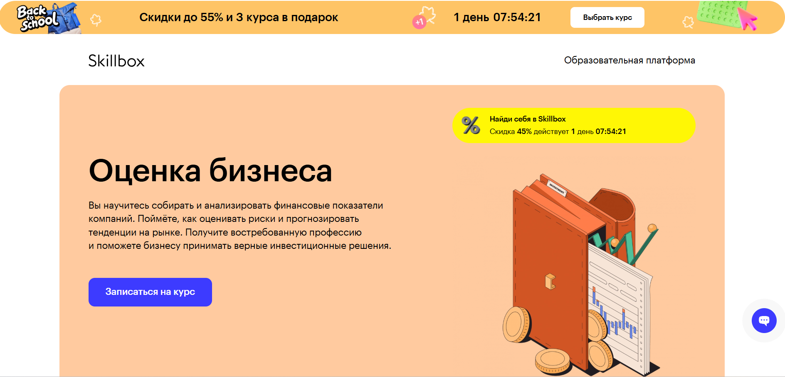- ✅ Официальный сайт: skillbox.ru
- 💸 Цена: 114 315 ₽ (со скидкой 45%).
- 💳 Рассрочка: доступна 4 763 ₽/мес до 24 месяцев.
- 📚 Формат: видеоуроки, практические задания, тесты, проекты, обратная связь кураторов, доступ к материалам навсегда.
- ⏳ Продолжительность: 8 месяцев, более 200 видеоматериалов.
- 📜 Документ: сертификат установленного образца, лицензия № Л035−1 298−77/179 609.
- 📝 Трудоустройство: стажировка через 3 месяца, работа через 6 месяцев, помощь в резюме и собеседованиях.
- 🔷 Для кого подходит курс: выпускникам финансовых факультетов, аналитикам, экономистам, математикам и специалистам технических профессий.
Особенности:
Программа помогает освоить навыки анализа и управления активами, что важно для работы финансовых аналитиков и специалистов по инвестиционным стратегиям. Обучение построено на реальных кейсах и задачах компаний, что даёт практический опыт. Студенты научатся оценивать эффективность инвестиций, работать с инвестиционными проектами и управлять рисками. Большое внимание уделяется финансовым моделям, которые позволяют принимать обоснованные инвестиционные решения. Курс подходит тем, кто хочет оценивать бизнес, проводить финансовые анализы и работать с инвестиционными портфелями. Возможность совмещать обучение с работой делает его удобным для разных категорий студентов. После окончания курса выпускники могут рассчитывать на востребованную профессию и карьеру в крупных компаниях.
Чему учатся студенты:
- Понимать экономические процессы и анализировать финансовые показатели компаний
- Анализировать инвестиционные портфели и прогнозировать доходность активов
- Проводить финансовый анализ бизнеса и оценивать риски проектов
- Оценивать стоимость компании и эффективность сделок M&A
- Строить финансовые модели и прогнозировать развитие компании
- Создавать презентации для инвесторов и руководителей
Преподаватели:
- Дмитрий Бородин — инвестиционный директор, кандидат экономических наук, автор курса, более 12 лет в финансах, CFA, FRM
- Игорь Внуков — сертифицированный оценщик бизнеса RICS
- Алексей Смывин — руководитель направления ПФИ, банк «Открытие»
- Екатерина Прозорова — аналитик департамента корпоративных финансов и M&A
- Карней Шайхимарданов — менеджер группы экономического анализа PwC
- Артур Халатов — финансовый партнер Ozon
- Виталий Устименко — финансовый директор Skillbox, член совета директоров MD Medical Group
Преимущества:
- Современный дистанционный формат обучения с практическими кейсами
- Возможность совмещать обучение с работой и другими делами
- Прямая связь с экспертами рынка и помощь кураторов
- Карьерная поддержка и помощь в трудоустройстве
- Доступ к материалам и обновлениям навсегда
- Закрытое сообщество студентов и экспертов для обмена опытом
- Востребованная профессия на рынке труда — более 1 200 вакансий
Отзывы учеников:
Студенты отмечают качественную подачу материала и поддержку преподавателей. Подчеркивают ценность практических заданий, которые помогают освоить методы анализа рисков и построения финансовых моделей. Многие выпускники говорят о быстрой адаптации на новой работе и возможности карьерного роста после прохождения программы.
Перейти на официальный сайт курса14. Инвестиционный анализ: эффективное управление инвестициями — Moscow Business School
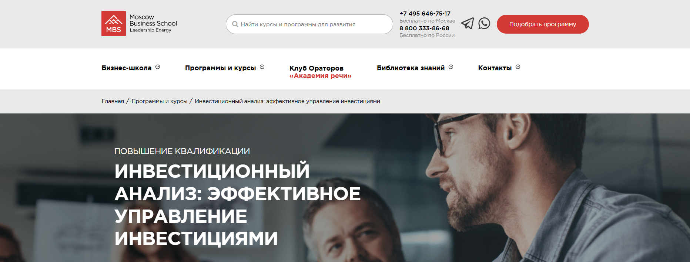- ✅ Официальный сайт: mbschool.ru
- 💸 Цена: 43 900 ₽
- 💳 Рассрочка: предусмотрена от 1 829 ₽/мес
- 📚 Формат: очно и онлайн, занятия ежедневно с 10:00 до 17:30, авторские материалы, кофе-паузы
- ⏳ Продолжительность: 2 дня
- 📜 Документ: удостоверение о повышении квалификации или сертификат MBS
- 📝 Трудоустройство: 85% выпускников получают повышение или смену должности в течение года
- 🔷 Для кого подходит курс: финансовые аналитики, специалисты по инвестиционным стратегиям, менеджеры и инвесторы
Особенности:
Программа направлена на развитие практических навыков анализа инвестиционных проектов и портфелей. Участники учатся работать с финансовыми моделями, оценивать риски и эффективность инвестиций, разрабатывать обоснованные инвестиционные решения. Занятия проходят под руководством экспертов-практиков, имеющих значительный опыт в корпоративных финансах и управлении активами. Студенты смогут освоить методы оценки стоимости бизнеса и инвестиционной привлекательности, а также научатся анализировать финансовую отчетность компаний. Обучение позволяет совмещать разные форматы и адаптировать график под личные задачи. По окончании курса выдается официальный документ, подтверждающий квалификацию. Дополнительно предусмотрено участие в закрытом бизнес-клубе MBS и доступ к методическим материалам.
Чему учатся студенты:
- Анализировать финансовые отчеты и показатели компаний
- Рассчитывать срок окупаемости, рентабельность и чистую приведенную стоимость
- Оценивать инвестиционную привлекательность проектов
- Анализировать риски и разрабатывать инвестиционные стратегии
- Строить и проверять финансовые модели
Преподаватели:
- Аверичева Елена Александровна — бизнес-тренер, эксперт-практик в налогообложении, бухгалтерском и управленческом учете, финансовых аудитах и антикризисном управлении
Преимущества:
- Возможность совмещать онлайн и очные форматы обучения
- Документы государственного образца и сертификаты, признаваемые работодателями
- Курс построен на практических кейсах и реальных примерах
- Поддержка преподавателей с многолетним опытом
- Карьерные перспективы и рост зарплаты после окончания обучения
- Доступ к бизнес-клубу Moscow Business School
Отзывы учеников:
Студенты отмечают практическую направленность программы и доступное объяснение сложных тем. Многие подчеркивают опыт преподавателя, интересную подачу материала и полезность кейсов. Выпускники ценят возможность сразу применять полученные знания в работе и положительно оценивают карьерные результаты после курса.
Перейти на официальный сайт курса15. Инвестиционный аналитик — Факультет экономики НИУ ВШЭ (Нижний Новгород)
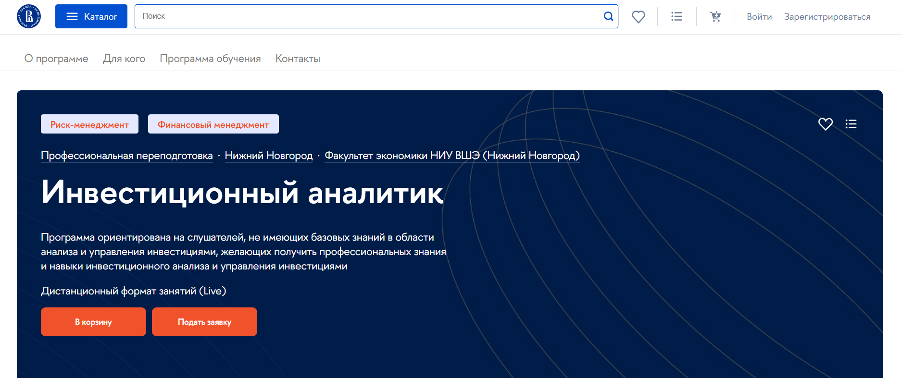- ✅ Официальный сайт: hse.ru
- 💸 Цена: 120 000 ₽ (для выпускников ВШЭ скидка 10%).
- 💳 Рассрочка: возможна оплата поэтапно, доступна рассрочка от вуза.
- 📚 Формат: онлайн синхронные лекции, практические задания, тесты, записи занятий в Smart LMS.
- ⏳ Продолжительность: 5 месяцев.
- 📜 Документ: диплом о профессиональной переподготовке государственного образца.
- 📝 Трудоустройство: обучение повышает квалификацию специалистов и открывает новые карьерные возможности в сфере инвестиций.
- 🔷 Для кого подходит курс: для начинающих специалистов, менеджеров, аналитиков и всех, кто хочет развиваться в сфере управления инвестициями.
Особенности:
Программа создана для тех, кто хочет освоить профессию инвестиционного аналитика и работать с корпоративными и частными инвестициями. Учебный процесс построен так, чтобы студенты могли совмещать обучение с работой благодаря удобному графику занятий. Онлайн-формат позволяет взаимодействовать с преподавателями и коллегами в реальном времени, а записи помогают повторить материал. Курс включает теоретические дисциплины и практические кейсы, которые дают навыки оценки активов и анализа рисков проектов. Выпускники смогут разрабатывать инвестиционные стратегии и проводить финансовые расчеты. Итоговая аттестация проходит в виде тестирования, по результатам которого выдается диплом ВШЭ, зарегистрированный в ФИС ФРДО.
Чему учатся студенты:
- Проводить инвестиционную оценку и анализировать финансовые показатели компаний
- Оценивать эффективность инвестиций и разрабатывать инвестиционные стратегии
- Научиться анализировать риски проектов и принимать обоснованные инвестиционные решения
- Формировать инвестиционные портфели и управлять активами
- Оценивать стоимость бизнеса и проводить финансовое моделирование
Преподаватели:
- Макаров Алексей Станиславович — заведующий кафедрой финансового менеджмента (Нижний Новгород)
- Россохин Владимир Валерьевич — доцент кафедры финансового менеджмента (Нижний Новгород)
- Хасянова Светлана Юрьевна — доцент кафедры банковского дела (Нижний Новгород)
- Чапрак Нелли Валерьевна — заместитель декана факультета экономики НИУ ВШЭ (Нижний Новгород)
Преимущества:
- Совмещение теории и практики с использованием реальных кейсов
- Обучение у экспертов рынка и преподавателей НИУ ВШЭ
- Доступ к личному кабинету Smart LMS с материалами и записями занятий
- Возможность гибкой оплаты, включая рассрочку
- Индивидуальная поддержка студентов через профессиональный чат
- Диплом государственного образца с регистрацией в ФИС ФРДО
Отзывы учеников:
Слушатели отмечают высокий уровень преподавателей, практическую направленность занятий и полезные кейсы. Многие подчеркивают удобный формат онлайн-обучения и возможность пересматривать лекции. Дополнительным плюсом считают гибкий график, который позволяет совмещать обучение с работой.
Перейти на официальный сайт курсаБесплатный курс по обучению на Инвестиционного аналитика
Инвестиционный анализ: путь к экспертному уровню, бесплатно – SF Education
✅ Официальный сайт: sf.educationОписание и особенности:
- 4 урока от практикующих экспертов помогут понять профессию инвестиционного аналитика и его задачи в финансовой сфере.
- Вы научитесь строить финансовую модель всего за 90 минут и использовать методы анализа данных.
- Курс раскрывает три ключевых формы отчетности: баланс, отчет о прибылях и убытках, отчет о движении денежных средств.
- На примере IT-стартапа формата SAAS участники освоят методы прогнозирования доходов, расходов и оценку рисков проектов.
- Программа даёт навыки моделирования и понимания инвестиционной привлекательности компаний.
- Занятия включают тестирование и практические кейсы для закрепления профессиональных навыков.
- Формат обучения дистанционный: видеоуроки и онлайн-практика доступны в любое время.
- После прохождения курса материалы остаются в постоянном доступе.
- Дополнительно предоставляются консультации по карьере и помощь в трудоустройстве.
Кто такой инвестиционный аналитик?
Инвестиционный аналитик — это специалист, который занимается изучением финансовых рынков, оценкой активов, компаний и инвестиционных проектов. Его главная цель — предоставить обоснованные рекомендации для инвесторов, фондов, банков и частных лиц, чтобы помочь им принять правильные решения и минимизировать риски.
Что делают аналитики по инвестициям и чем занимаются?
Основная работа инвестиционного аналитика связана с анализом огромного массива данных, прогнозированием и разработкой стратегий. Среди основных задач можно выделить:
- Сбор и обработка финансовой информации.
- Оценка компаний, акций, облигаций и других активов.
- Разработка инвестиционных стратегий для клиентов.
- Прогнозирование динамики фондовых рынков и макроэкономических показателей.
- Подготовка отчетов и презентаций для руководителей и инвесторов.
Таким образом, инвестиционный аналитик играет ключевую роль в принятии решений на финансовых рынках.
Что должен знать и уметь инвестиционный аналитик?
Профессия требует серьезной подготовки и широкого спектра знаний. Чтобы быть востребованным специалистом, аналитик должен обладать следующими навыками:
- Знание финансового и инвестиционного анализа.
- Умение работать с экономическими и бухгалтерскими отчетами.
- Владение Excel, Python, R, SQL и специализированными финансовыми системами (Bloomberg, Thomson Reuters).
- Навыки прогнозирования и оценки рисков.
- Английский язык на уровне не ниже Upper-Intermediate.
- Развитое аналитическое мышление и умение работать с большими данными.
Востребованность и зарплаты инвестиционных аналитиков в России
С каждым годом профессия становится все более популярной. В России сохраняется высокий спрос на специалистов в сфере инвестиций, особенно в банках, управляющих компаниях, инвестиционных фондах и консалтинге.
Средняя зарплата инвестиционного аналитика в России в 2025 году:
- Начинающий специалист — от 70 000 до 120 000 рублей.
- Опытный аналитик с 3–5 годами практики — от 150 000 до 250 000 рублей.
- Ведущий аналитик в инвестиционных банках и крупных фондах — от 300 000 рублей и выше.
Особенно ценятся специалисты, которые имеют опыт в международных проектах и свободно владеют английским языком.
Как стать аналитиком по инвестициям и где учиться?
Чтобы освоить профессию, необходимо получить качественное образование и практические навыки. Наиболее перспективные направления:
- Высшее образование в области экономики, финансов, менеджмента или математики.
- Курсы и программы дополнительного образования по инвестициям и финансовому анализу.
- Международные сертификаты (CFA, ACCA, FRM), которые значительно повышают шансы трудоустройства в крупных компаниях.
- Практика и стажировки в банках, брокерских и консалтинговых компаниях.
Карьерные перспективы и развитие
Инвестиционный аналитик может развиваться в разных направлениях:
- Аналитик фондового рынка.
- Финансовый консультант.
- Портфельный управляющий.
- Инвестиционный банкир.
- Руководитель аналитического отдела или Chief Investment Officer (CIO).
Таким образом, профессия открывает широкий спектр карьерных возможностей и позволяет выйти на международный рынок труда.
Что такое обучение на инвестиционного аналитика?
Обучение на инвестиционного аналитика — это процесс получения знаний и практических навыков, необходимых для анализа финансовых рынков, оценки инвестиционной привлекательности и построения инвестиционных стратегий. В ходе программы студенты изучают основы финансового анализа, методы оценки активов, управление инвестиционными портфелями и учатся работать с различными финансовыми инструментами.
Какие задачи решают аналитики по инвестициям после обучения?
После прохождения курсов инвестиционные аналитики оценивают риски, проводят анализ инвестиционных проектов, рассчитывают эффективность инвестиций, анализируют финансовые показатели компаний и помогают формировать обоснованные инвестиционные стратегии для инвесторов и организаций.
Зачем нужно обучение инвестиционной аналитике?
Профессия инвестиционного аналитика востребована, так как компании и инвесторы нуждаются в специалистах, которые оценивают инвестиционную привлекательность, проводят финансовый анализ, разрабатывают инвестиционные стратегии и помогают принимать обоснованные решения в условиях риска.
Какие форматы обучения на инвестиционного аналитика доступны?
Сегодня можно выбрать различные форматы: онлайн курсы, дистанционное обучение, очные программы в университетах, индивидуальные консультации с экспертами рынка. Онлайн-платформы позволяют совмещать обучение с работой, гибко выбирать график и изучать материалы в удобное время.
Чему можно научиться в процессе обучения по инвестиционному анализу?
В процессе обучения слушатели научатся анализировать финансовые рынки, оценивать эффективность инвестиционных проектов, рассчитывать инвестиционные оценки, проводить оценку рисков и доходности, строить финансовые модели и использовать современные инструменты анализа.
Какие навыки получают финансовые аналитики на курсах по инвестициям?
Обучение формирует профессиональные навыки: оценка активов и бизнеса, анализ отчетности компаний, работа с инвестиционными фондами, построение финансовых моделей, умение интерпретировать данные инвесторов и прогнозировать экономическую ситуацию.
Какие методы анализа изучают на курсах инвестиционного анализа?
Студенты осваивают методы оценки стоимости компаний, анализа денежных потоков, финансового моделирования, прогнозирования и оценки эффективности управления инвестициями. Практика строится на реальных кейсах и данных.
Что включает в себя обучение инвестиционных аналитиков?
Курсы включают практические кейсы, лекции по корпоративным финансам, анализу рисков проектов, управлению активами и формированию инвестиционных портфелей. Также студенты учатся работать с современными платформами и инструментами управления инвестициями.
Какие карьерные перспективы открываются?
После окончания обучения выпускники могут работать финансовыми аналитиками, инвестиционными менеджерами, специалистами по управлению активами и стратегиями компании, а также занимать должности в банках, инвестиционных фондах и корпорациях.
Как проходит обучение по инвестиционной аналитике?
Обучение проходит в удобных форматах: очно или дистанционно. Онлайн курсы позволяют учиться по гибкому графику, совмещать обучение с работой, получать доступ к методическим материалам и практическим заданиям. В процессе студенты проходят этапы от изучения основ до освоения продвинутых методов анализа.
Можно ли совмещать обучение на инвестиционного аналитика с работой?
Да, большинство программ рассчитаны на занятых специалистов. Дистанционное обучение и онлайн курсы позволяют совмещать учебу с основной деятельностью, самостоятельно выстраивать график обучения и получать практические знания без отрыва от работы.
Какие документы получают выпускники после окончания курса?
После окончания курса студенты получают сертификаты или дипломы установленного образца, подтверждающие квалификацию. На некоторых образовательных платформах предусмотрена выдача международных сертификатов CFA, что повышает шансы трудоустройства у работодателей.
Чем отличаются хорошие курсы инвестиционного анализа?
Хороший курс сочетает теорию и практику, включает изучение отчетности компаний, кейсов из реального бизнеса, работу с финансовыми моделями, поддержку кураторов и экспертов рынка. Также важна возможность практических занятий и доступ к базам данных инвесторов.
Какие знания необходимы для начала обучения по аналитике инвестиций?
Для старта достаточно базовых знаний в области экономики и финансов. В процессе обучения слушатели углубятся в специфику анализа рынков, освоят методы оценки стоимости проектов и научатся рассчитывать эффективность инвестиций.
Сколько времени занимает обучение инвестиционному анализу?
Продолжительность зависит от формата. Краткосрочные онлайн курсы можно пройти за 2–3 месяца, программы повышения квалификации — за 6–12 месяцев. Университетские программы и магистратуры занимают 1–2 года и позволяют глубоко изучить специфику профессии.
Какие практические навыки формируются у студентов?
На практических занятиях студенты учатся оценивать бизнес, рассчитывать инвестиционные оценки, анализировать эффективность инвестиционных проектов, строить финансовые модели и проводить финансовый анализ отчетности компаний.
Кому подойдет обучение на инвестиционного аналитика?
Курсы подойдут студентам экономических специальностей, действующим финансистам, менеджерам и всем, кто хочет получить профессию инвестиционный аналитик, освоить ключевые инструменты финансового анализа и построить карьеру в сфере инвестиций.
Как инвестиционные аналитики помогают компаниям после обучения?
Обученные специалисты помогают компаниям принимать инвестиционные решения, анализируют эффективность инвестиций, оценивают риски проектов, прогнозируют финансовые результаты и участвуют в разработке стратегии компании.
Почему стоит освоить инвестиционный анализ?
Освоив профессию, вы сможете работать в сфере финансов, оценивать инвестиционную привлекательность проектов, управлять портфелями инвестиций и строить карьеру в международных компаниях. Востребованность специалистов подтверждается количеством вакансий и высоким уровнем зарплат.
------------------------------------------------
Реклама. Информация о рекламодателе по ссылкам в статье.